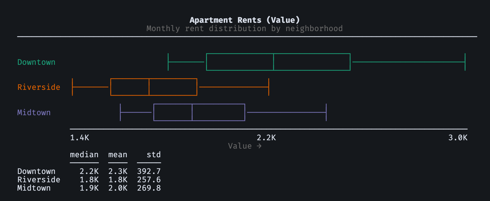

textcharts¶
Beautiful text-based charts for your terminal — zero dependencies.
15 chart types with Unicode box-drawing, ANSI colors, and automatic terminal width detection. Pure Python, no external dependencies, Python 3.10+.
{kind=link}

from textcharts import BoxPlot, BoxPlotSeries
downtown = [1825, 1900, 1980, 2100, 2250, 2400, 2550, 2710, 2980]
riverside = [1450, 1525, 1600, 1680, 1750, 1820, 1950, 2080, 2220]
midtown = [1650, 1710, 1780, 1840, 1920, 2010, 2140, 2280, 2450]
series = [
BoxPlotSeries(name="Downtown", values=downtown),
BoxPlotSeries(name="Riverside", values=riverside),
BoxPlotSeries(name="Midtown", values=midtown),
]
chart = BoxPlot(
series=series,
title="Apartment Rents",
subtitle="Monthly rent distribution by neighborhood",
)
print(chart.render())
Install¶
pip install textcharts
Features¶
Domain-neutral defaults — generic labels and titles out of the box. Add
context with the subject parameter (e.g., subject="Query Latency"
turns “Histogram” into “Query Latency Histogram”).
Adaptive rendering — auto-detects terminal width, color support, and Unicode capabilities. Falls back to ASCII-safe, plain-text output in non-interactive contexts.
Configurable at every level — ChartOptions controls color, width,
theme, Unicode, and outlier capping. Per-chart parameters cover metric labels,
improvement direction (lower_is_better), and value formatting.
Three interfaces — Python API, CLI (textcharts bar --title "Revenue"),
and MCP server for AI tool use (pip install textcharts[mcp]).
Chart types¶
Chart |
Class |
Data model |
|---|---|---|
Bar chart |
|
|
Histogram |
|
|
Heatmap |
|
matrix + labels |
Box plot |
|
|
Line chart |
|
|
Scatter plot |
|
|
Comparison bar |
|
|
Diverging bar |
|
|
Summary box |
|
|
Percentile ladder |
|
|
Normalized speedup |
|
|
Stacked bar |
|
|
Sparkline table |
|
|
CDF chart |
|
|
Rank table |
|
|
See the Chart gallery for rendered screenshots of every chart type in color, greyscale, and monochrome modes.